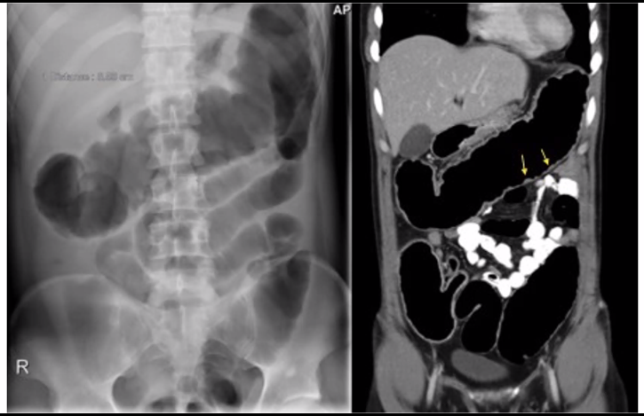
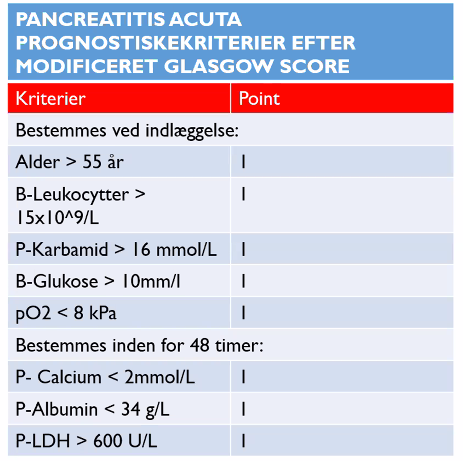
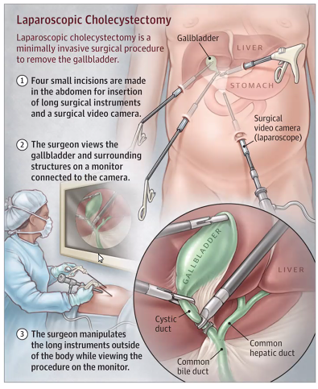

Akut abdomen
Dan siger godmorgen
- Dan har god mavefornemmelse om det der skal ske i dag
- Sidste uge på studiet, desværre skulle være blive godt
Akut medicinsk gastroenterologi og hepatologi
Case 1
52-årig kvinde indlægges med kørsel 1. Veninde har fundet pt liggende på sofaen med opkast. Patienten er vågen, men meget træt. Klager over hovedpine og mavesmerter.
- Hvad er jeres tentative diagnoser?
- Meningitis
- Influenza
- Gastroenteritis
- Kardielt
- Forgiftninger
- Tømmermænd
- Akut glaukom *
- Hvordan vil I gennemgå patienten?
- Anamnese
- Obj
- A-gas *
- Er der mere I vil vide?
- Rejseanm
- Forløb. *
ABCDE-gennemgang
- A: Frie luftveje
- B: Vesikulær respiration, saturation 96%, RF 26
- C: BT 107/67, P 110, Hjertestetoskopi med regelmæssig aktion=pp, ingen mislyde, EKG=SR
- D: GCS 14-15 (Ø3-4, V5, M6), lysreagerende pupiller, BS 5,5, ingen fokal neurologi
- E: Temp 37,8. Alment moderat påvirket Abdomen: blødt og uømt. Nat. Tarmlyde
Fortolkning * BT lavt, puls højt. * Ikke helt stabil * ikke qSOFA * Vi holder øje med hende
- A-gas
- pH 7,29
- pO2 10,1
- pCO2 3,0
- BE: -7
- BS: 4,5;
- Laktat: 6
- Fortolkning
- Met acidose, resp komp.
- Laktat?
Behandlingsplan
- Hun har rigeligt ilt, hun behøver ikke mere
- IV-adgang
- Væske
- Venyler
- Blodprøver
- Supplerende anamnese
- Afglidende i kontakten
- Drikker alkohol, drukket i går.
- Fandt nogle paracetamol blisterpakker.
Hun har en paracetamol forgiftning
- NAC-drop
- Altid starte NAC-infusion!!
- Biokemi
- Hb 9,2. Krea 114
- Thrombocytter 228, Leu 28, crp 48
- INR 1,4, ALAT 870, Bas phos 142, Bili 38
- Paracetamol 0,43
- Efter 8 timer... Pt er blevet somnolent, grænsende til comatøs.
- Anurisk
- A: Snorken
- B: Vesikulær respiration, saturation 91%, RF 27
- C: BT 95/55, P 114 Hjertestetoskopi med regelmæssig aktion=pp, ingen mislyde, EKG = SR
- D: GCS 9 (Ø2, V3, M4), lysreagerende pupiller, BS 4,1, ingen fokal neurologi
- E: Temp 37,8. Alment svært påvirket. Abdomen: blødt og uømt. Nat. Tarmlyde
- ABG: pH 7,21, pO2 8,7, pCO2 2,9 BE: -9 BS: 4,5; Laktat: 13
- Hb 7,9, Thrombocytter 133, Leu 28,
- Kreatinin 170
- INR 4,6, ALAT 10.211, Bas phos 152, Bili 79
- BS 3,8
- Hvad gør I nu?
- Fulminant leversvigt.
- Hjælp!
- Nasal airway.
- DAN: Anæstesien bliver SÅ glade!
- Væsketerapi
- IV glukose
- Overflytning til Rigshospitalets leverafdeling.
Leversvigt
- Årsager til akut leversvigt
- Infektion
- Inflammation
- Toxicitet
Ikke hlet sådan efter nye paracetamolpakker
Take home
- Påbegynd NAC infusion på mistanke om akut PCM forgiftning
- Følg DSGHs guideline
- Kontakt til Rigshospitalets hepatologiske specialafdeling ved
- Hepatocellulær skade (høj ALAT) og kritisk påvirkede koagulationsfaktorer (INR > 1,6)
- Nyrepåvirkning og/eller metabolisk acidose, der ikke kan korrigeres på væsketerapi
- Encefalopati
Paracetamolforgiftning - initiel behandling.

Case 2
- 60 årig mand, gift, selvstændig erhvervsdrivende, godt socialt netværk
- Skrantet nogle uger med produktiv hoste, tabt sig, følt feber, ÆF synes han har været bleg.
- Oplyser at have dårlige vaner med alkohol, føler sig ikke alkoholafhængig, dagligt alkoholforbrug svinger mellem 3-10 genstande
- OP x 2 for håndkontraktur.
- Tidl.: behandlet for dupuytrens kontraktur x 2 ellers rask. Går sjældent til læge.
- Indlægges akut efter at have været kortvarigt besvimet i hjemmet
- Hvad nu
- ABCDE *
- A: Frie luftveje, let sekretraslen
- B: Vesikulær respiration med krepitation basalt på højre side, saturation 91%, RF 20. Egale respirationsbevægelser
- C: BT 96/67, P 100. Hjertestetoskopi med regelmæssig aktion=pp, ingen mislyde, let gusten, normalt kapillær respons, EKG =SR * D: GCS 15, lysreagerende pupiller, BS 6,7, ingen fokal neurologi,
- E: Temp 36,1. Mere kronisk end akut påvirket. Abdomen: udspilet, blødt og uømt. Udslettet navlegrube. Rigelige nat. tarmlyde
Udslettet navlegrube = helt flat. Det har vi ikke hørt om før.
15-06-2020 09:03
- Behandlingsplan
- IV-adgange
- Ilt
- Væske
- Venyler
- Først ved feber, men ville alligvel hos ham her
- Bp
- Levertal, væske-nyretal, hgb, infektionstal.
- Væskeskema
- Rgt. Thorax: Hø sidigt pneumonisk udseende infiltrat * Pneumoni mistænkes: AB opstartes efter guideline.
- ABG: pH 7,34, pCO2 5,9, pO2 8,1, HCO3- 22, BE -3, laktat 1,6
- Okay, let resp asicose? eller metabolisk?
- Kan gentages efter lidt tid for at se hvordan det går. * Biokemi
- Hbg 7.1
- Leuco 14,7, crp 154, trc 99
- Kreatinin 110, K 4,2, Na 131
- Bilirubin 52, ALAT 54, INR 1.9
Over natten
Over natten bliver patienten sløv, har tiltagende ilt behov, om morgenen findes bevidstløs med overfladisk respiration.
- A Snorken
- B Vesikulær respiration med krepitation basalt på højre side, saturation 86%, RF 32. Egale respirationsbevægelser
- A-gas: pH 7,29, pCO2 7,2, pO2 7,1, HCO3- 22, BE -3, laktat 1,6
- C: BT 100/56, P 78. Hjertestetoskopi med regelmæssig aktion=pp, ingen mislyde, let gusten, normalt kapillær respons
- D: GCS 8, (Ø2,V2,M4) lysreagerende pupiller, BS 6,7, ingen fokal neurologi,
- E: Temp 38,1. Akut påvirket
-
Fortolkning:
- Ikke stabil længere
- Måske ligge Nasal airway.
- Ringer efter intensiv.
RP ITA tilsyn mhp intubation
Intuberes, herefter respiratorisk stabil og extuberes efter 2 døgn Vækst af pneumokokker i tracheal sekret, penicillin fortsættes Fortsat HE grad 1-2, udskrives til medicinsk afd dag 5
Læring første

- Årsager til leversvigt ved kronisk leversygdom
- Dehydratio
- Infektion
- Blødning
- Obstipation
- Toxicitet
15-06-2020 09:14
Pause
Case 3
- 58 årig kvinde indlægges med et 2 døgns varende mavekramper, vandtynd diarre, blodtingeret og opkastninger. Voldsomt utilpas. 3 dage forinden opereret for en knyst på foden.
- Har aftenen forinden debut spist steg med salat tilberedt af Uxor — han har ikke været syg.
- Kendt med T2DM og hypertension.
- ABCDE
- A: Frie luftveje, lidt hæs af opkastninger.
- B: Vesikulær respiration, saturation 97%, RF 21. Egale respirationsbevægelser
- C: BT 100/64, P 120. Hjertestetoskopi med regelmæssig aktion=pp, ingen mislyde, pæne farver, let forlænget kapillær respons = 3 sek., EKG = Sinustakykardi
- D: GCS 15, lysreagerende pupiller, BS 6,7, ingen fokal neurologi, * E: Temp 37,5. Alment moderat påvirket, kolde hænder og fødder. Abdomen: blødt og uømt. Rigelige nat. tarmlyde
- Fortolkning.
- Kolde hønder og fødder: Hypoperfunderet
- Behandlingsplan
- Væske, effekt på BT?
- Fint med tynde væsker, trods lidt blodtingeret opkast
- Blodprøver
- Bred standardpakke
- ABG
- Afføring til dyrkning
- Tarmpatogene
- Virus
- Urinstix
- Venyler?
- Neej, hun er ikke febril
- Billed?
- Neej, ikke relevant
- Væskeskema?
- Ja, det er nok meget godt
- Sonde?
- Det kan diskuteres, aflastende i så fald
- KAD?
- Godt til at følge væskebalance. Urinoutput
- Isolation?
- Ja, indtil vi finder ud af om det er noget
- Medicinstatus?
- NSAID? Mavesår
- T2DM + hypertension
- Metformin
- Nyrepåvirkning
- Hypertension: ACE-hæmmer
- Hun har formentlig noget nyrepåvirkning, så der skal pauseres nyretoksismedicin
- ACE, Metformin, NSAID.
- Væske, effekt på BT?
- ABG
- pH 7,32, pCO2 4,9, pO2 10,2, HCO3- 21, BE -6, laktat 2,8, Na+ 128, K+ 4,9
- Metabolisk acidose, Na/K skæv.
- Hyponatriæmi
- Hb 9,3, Kreatinin 280, Kalium 5,0, Natrium 128
- Leucocytter 14,1 med neutrofilocytose, CRP 3,2
- Albumin 42 (max 38, så lidt høj)
- ALAT 150, Basisk fosfatase 126, Bilirubin 26, LDH 360
- Gennemgang
- Gastroenteritis?
- Akut Marianne: mest oplagt
- Gastroenteritis?
- Ny ABCDE
- A: Frie luftveje
- B: Vesikulær respiration, saturation 96%, RF 24. Egale respirationsbevægelser
- C: BT 92/54, P 120. Hjertestetoskopi med regelmæssig aktion=pp, ingen mislyde, pæne farver, let forlænget kapillær respons = 3 sek., EKG = Sinustakykardi
- D: GCS 13 (Ø3,V4,M6), vågen, men sløv, lysreagerende pupiller, BS 6,7, ingen fokal neurologi,
- E: Temp 37,5. Uændret alment påvirket, uændret kolde hænder og fødder. Abdomen: blødt og uømt. Rigelige nat. tarmlyde
15-06-2020 09:40
- Fortolkning
- Lav BT
- opfylder qSOFA sepsis?
- Nej nærmere hypovolæmisk.
- Ikke stabil *
- Fokusområder
- Cirkulation
- CNS
- Nyrefunktion
- Syre-base status
- Elektrolytforstyrrelser
Elektrolytbalanceret væsketerapi
Obs kalium<2,0 7 arytmi/hjertestop > telemetri
Obs pH<7,20, K > 6,5, karbamid > 40 > dialyse
Pauser nyretoxisk medicin
Antibiotika (sjældent indikation, afvent dyrkningssvar) (nedsat AT, T > 38,
blodig diarre)
Take Home Message
Klinisk vurdering — er pt shockeret?
Svær acidose, hyperkaliæmi og uræmi
> dialyse
Balanceret væsketerapi
Pauser nyretoxisk medicin
Antibiotika er sjældent indiceret
Case 4
- 36 årig mand kendt med colitis ulcerosa gennem 7 år.
- I behandling med Tbl mezalasin 2400 mg x 1 og imurel 150 mg x 1.
- For 14 dage siden spist på frokostrestaurant.
- Fik tatar. De efterfølgende dage lidt uro i maven og den seneste uge tiltagende afføringsfrekvens med 8 udtømninger i dagtid og 3 om natten.
- Diffuse mavesmerter, måske feber.
- Ingen syge i omgangskredsen
- A: Frie luftveje, normal bevægelse af brystkassen
- B: Vesikulær respiration, saturation 97%, RF 22.
- C: BT 110/64, P 114. Hjertestetoskopi med regelmæssig aktion=pp, ingen mislyde, EKG = SR
- D: GCS 15, lysreagerende pupiller, BS 6,7, ingen fokal neurologi,
- E: Temp 37,8. Alment moderat påvirket. Abdomen: blødt med diffus ømhed, grænsende til peritoneal. Rigelige nat. Tarmlyde
- Behandlingsplan
- IV-adgang
- Væskebolus?
- Bp'er
- Urinstix 15-06-2020 09:54
- Afføringsprøver
- obs clostridium
- Væskevandladningsskema
- Sonde? NEJ
- KAD? NEJ
- Antibiotika
- Billeddiagnostik
- CT!
- Andet?
- Kald kirurgerne
- ABG
- pH 7,32, pCO2 4,2, pO2 11,3, HCO3- 21, BE -5, laktat 2,8
- Biokemi
- Hb 6,7, Leucocytter 14,1 med neutrofilocytose, CRP 15
- Kreatinin 88, Kalium 3,1, Natrium 134, Albumin 27,
- ALAT 34, Basisk fosfatase 126, Bilirubin 13, LDH 210,
- Fortolkning:
- Albumin har lav: akut fasereaktant (lav) + leak af protein i tarm pga colit.

- Dilaterede tarme.
- Pile på CT: 15-06-2020 09:58
- Diagnose: toksisk megacolon
- Værst tænkelige komplikation
Akut svær colitis ulcerosa —toxisk megacolon
- Oftest patienter med tidligere ekstensiv colitis/pancolitis
- Kan være debut symptom
- Akut svær colitis er karakteriseret ved
- 8 tynde, blodige udtømninger, natlige udtømninger, urge mavesmerter
- Takykardi
- Evt. feber
- Anæmi, trombocytose, hypoalbuminæmi, forhøjet crp
Behandlingen ved toxisk megacolon er akut kirurgi
- Hvis der ikke findes indikation for kirurgi, da
- Rp Fæcesdyrkninger
- Rp Væsketerapi
- Rp Højdosis solumedrol
- Rp Unikalk F
- Rp Evt antibiotika
- Rp Tromboseprofylakse
- Rp fæces-registreringsskema
- Rp bækkeninspektion
- Rp daglig biokemi
- Klinisk vurdering 2 gange dagligt
- Konferer med gastroenterolog!!!
- Disse patienter skal ikke ligge i akutmodtagelsen
Take Home Message
Klinisk vurdering — er pt toxisk?
Mavesmerter, mange blodige udtømninger, takykardi) obs toxisk megacolon
Konferer med gastroenterolog Kirurgisk tilsyn
15-06-2020 10:00
Spørgsmål
- Sonde eller ej
- SOnde ved mistanke om ileus!
- Man kan ligge en aflastende soden ved opkast
- Bækkeninspektion
- Man kigger på afføring! (ikke menneskebækken, men lortebækken)
- Dan: Snak om væskebehandling. Kun væske ved lavt BT hvis patienten er påvirket ().
- Noget med at væsken til ascites manden løber lige ud i ascites ved BTsys på 96 fordi det er habituelt.
3. time
- Rosa og Bulut
K-case 1
32-årig kvinde indlægges med nedre mavesmerter. EWS 1
Diagnostiske overvejelser, Tænk over mindst 5 sandsynlige diagnose hvoraf en er akut livstruende. Skriv gerne ned
- Ektopisk graviditet
- DM
- UVI - pyelonefritisk
- Appendicit
- Opstipation
- Anamnese
- Hvor længe haft smerter
- Gradvist kommet
- Konstante?
- Jagende, skærende, forværring i ture.
- 1-10
- 8-9, har prøvet panodil
- Ingen svie ved vandladning
- Sidst på toilettet
- Gravid?
- Sexuelt aktiv, har spiral
- Igen opkastninger
- Spist/ drukker? I morges, men ej appetit.
- Tidl. operation? Kikkert på mistanke om blindtarm. Fjernede ikke blindtarm
- Hvor længe haft smerter
Anamnese
- Debut og varighed: 1,5 døgn, opstået over timer.
- VAS: 8-9, Ingen effekt panodil
- Karakteristika: jagende , skærende, turevise forværring
- Lindrende forværrende faktorer: Bedst i hvile, forværring i sideleje og hoste
- Opkast/afføring: en enkelt opkastning dag 1, ingen afføring gennem 2 dage.
- Gynækologiske klager: en del udflåd, normalt op til menstruation
- Disp/expositioner: mor død af brystkræft som 50-årig. Ingen rejseaktiv
- Cancersymptomer: Ingen
- Tidl: laparoskoperet i 2002 obs. appendicit.
- Øvrige organsystemer: recidiverende cystitter.
- Gyn: para x 2, har kobberspiral.
- Medicin: intet vanligt
- Tobak, alkohol og stoffer: 10 cigaretter dagligt, alkohol til festlige lejligheder.
Obj us. af abdomen
- Tidl cikatricer
- udfyldninger
- auskultation
- perkussion
- luft eller dæmpning
- dæmpning => udfyldning, væske => ascites el. litervis af blod ved ekstrauterin graviditet
- luft eller dæmpning
- Palpation
- start væk fra smertested
- Direkte og indirekte ømhed.
- Nyreloger
- frie..
- Hernier
- Lymfeknuder i lyske
- Mesenteriel adenit har generel lymfesvulst
Case forsat.
- Værdier: BT: 111/63, puls: 99, sat: 99 uden ilt, temp.: 38,2
- AT: blussende varm og tør let forpint
- Abdomen: blødt, lokaliseret øm i højre fossa og over symfysen, Indirekte øm og muligvis slipøm. Maks ved macBurneys punkt, mistanke om resistence. Frie nyreloger. Ingen hernier. Ingen adenopati
- GU: rigeligt gulligt udflåd uden lugt, ømhed over livmoderen og mod højre.
- Rect.: Normalt farvet fæces på handsken, ingen tumores.
- ROSA: Hun er peritoneal
- Forskellige tests - tegn: (et er nok)
- Indirekte
- Slipøm
- Bankeømhed
- Defence - generalisteret
- Psoasømhed
- Hoppeømhed
- Man skriver bare at patienten er peritoneal, så kommer der en kirurg og siger patienten ikke er det. Det er fint.
- L: Man skriver bare "vurderes peritoneal"
- Hvilke ordinationer
- Blodprøver: Leukocytter 12,6, CRP 56, hgb 7,8
- Urinstix og HCG: 25 leuko, spor af blod. HCG neg.
- A-punktur: ?
- Det behøves ikke. Giver ikke væsentlige informationer
- Dyrkninger: vaginalpodninger, urin til D+R
- Altid god ide at pode of klamydia + gonore når benene er oppe.
- Faste og tørste
- IV adgang
- Smertestillende
- Smertestillende - kan man vurderer dem ordenligt efter smertedækning?
- Ja, det kan man sagtens. Forsinker ikke tid til diagnose.
- Smertestillende - kan man vurderer dem ordenligt efter smertedækning?
- Videre plan
- Diagnostisk laparoskopi
- Man kunne lave CT hvis det kunne blive kirurgisk kompliceret eller der er flere differential diagnoser, men her er det ret oplagt appendicitis uden diff-diagnoser.
Billede fra laparoskopi
Appendicit
Nem lille laporaskopisk operation hvor patienten kan gå hjem samme dag.
- Hvis man ikke fandt appendicit: 15-06-2020 10:44
- Så kigger man det hele igennem.. Fangede det ikke lige
- Underlivet, torkveret cyste
- Man detorkverer dem.
- Man ville alligevel kigge ind, så det fint.
- Man kan få falsk hgb og leuko i urinstix hvis appendicitet ligger op ad blære.
- Dog ikke positiv nitrit på den
K-case 3 (men er 2)
15-06-2020 10:47
- 63 årig mand indlagt med venstresidige mavesmerter
- EWS 3
- A: fri
- B: Sat 96, ves. resp. bilat. RF: 20
- C: BT 160/90, Puls 116
- D: GCS 15, AVPU: A
- E: temp: 38,8
- qSOFA:
- RF > 22
- GCS <= 14
- Sys BT <= 100
- qSOFA = 0
- Anamnese:
- I øvrigt rask. Ingen daglig medicin. Mavesmerter gennem 2 dage i venstre side, nu feber. VAS 8, Forværring ved bevægelse. Ingen opkast, Ingen afførring gennem det sidste døgn. Tidl. blod i afførring
- Objektivt:
- Abdomen: Smerter nedre venstre kvadrant og venstre flanke. Indirekte ømhed og slipømhed. Ingen hørbare tarmlyde. Frie brokporte
- Ordinationes
- IV adgange
- 1 liter NaKaGlu
- Faste og tørste
- Smertestillende
- Urin stix + urin til D+R
- Blodprøver
- venyler
- BREAKOUT
- Nævn relevante tentative diagnoser?
- Diverticulit
- Pyelonefrit
- Perforeret hulorgan. *
- Diskuter om I vil opstarte patienten i AB.
- Ja, ved perforeret, men ikke ved simpel diverticulit.
- Diskuter hvilken scanningsmodalitet i vil vælge med udgangspunkt i jeres tentative diagnoser.
- CT-abdomen med kontrast
- ABG.. pga laktat
- Tentative diagnoser
- Ukompliceret divertikulit
- Kompliceret divertikulit
- fistulering + 15-06-2020 10:59
- Urinvejsinfektion
- Pyelonefrit
- Pyonefrose
- Coloncancer med abcess/perforation
- Pancreatit
- i halen kan give ve. smerter
- Ordinationer
- Pip/tazo
- Da han opfylder SIRS-kriterier, høj p og feber.
- Metronidazol
- CT med kontrasst
- Pip/tazo
CT-abdomen med konstrat.
15-06-2020 11:02
- Grå omkring pile: inflammations
- Ukompliceret diverticulitis
- Fik ikke helt fat i hvorfor.. Se slutning af 3. time.
4. timer 15-06-2020 11:11
Mustafa Bulu
Case 1
Nick Jackson
- 65-årig mand køres med ambulance til akut modtagelse. Meldes som akut abdomen.
- Pludselig indsættende smerter i øvre abdomen.
- Hvilken diagnostsike overvejlser vil du gøre dig og hvilke tiltag vil du sætte i værk?
- ABCDE
- Thorax, Le / KARdio
- STEMI
- LE
- Dissektion
- Abdomen
- Pankreatit
- Galdeveje
- Dissektion, aneurisme, øvre GI-blødning
- A: Frie luftveje.
- B : Takynøpisk. St. p.Vesikulær resp.
- C: Bleg. Klamtsvende. Normohydreret. St. c. HF = PP regelmæssig.
- D: Vågen, klar, orienteret i tid, sted og egen data. Smerte påvirket. Nervøs.
- Værdier
- BT : 95/50
- Puls: 102
- Tmp: 38, I
- RE: 16
- SAT :93 %
- ABG
- pH: 7,20 (7,35-7,45)
- pO2: 15 (1-15)
- pCO2: 2,97 (45-60)
- HCO3-: 10,6 (21-26)
- BE: -18,1 (-3 - +3)
- Fortolk: Met. acidose, forsøgt resp. kompenseret
- Tiltag
- Væske og ilt
15-06-2020 11:22
- EKG
- Normalt EKG?
- STEMI udelukkes
- LE ? Ikke S1Q3T3 i hvert fald eller belastning
Stjerner = smerter
- Hæmatom omkring umbillicus
- højre flanke
- umbilicals herne
- Lidt biokemi
- Hgb: 9,2
- Leu: 15,8
- BS: 11
- Laktat 1,1
- Hvorfor fanden er den 1,1?!
- Fri luft
- Også på transversalsnit
- Milt skuppet ned
- 15-06-2020 11:36 ny snak.
- DET ER IKKE FRI LUFT - det er tarm.
- Det skal være over lever.
- Inflammation omkring pancreas?
- Pancreatit?
- Bulut: Det er pancreatit
- Friluft kan være svært at se.
-
Snak om hvad man skal se på CT 15-06-2020 11:32
- Ileus og fri luft
- Oplagte billede og forandringer vil blive vist til eksamen.
- Hgb : 9,2
- Leu: 15,8
- Trombocyter: 241
- Albumin : 34
- Kreat: 93
- Natrium:135
- CRP: 190
- Amylase: 920
- Bilirubin: 9
- Basisk phostase: 40
- LDH: 350
Akut pancreatitis
- At få patienten gennem den akutte fase
- Smertelindring
- Organunderstøttende terapi
- Behandle komplikationer
- Diagnosen akut pankreatit
- To af tre
- Smerter abdominale
- Forhøjet amylase x3 forhøjet(i udlandet lipase)
- CT-skanning med pankreatit
- Ætiologi
- Alkohol (Elefantbajer)
- Galdesten
- Mindre oplagt ætiologi
- Medicin
- Hyperlipidæmi
- Hyperkalcæmi
- ERCP
- Tumor
- Traume
- Operation
- Autoimmun
- Der var også et fancy slide. (Forsmark et al. NEJM.)
- Noget med scores
- Forudse om den svær.

Behandling
- Smertebehandling
- Stærk analgetika.
- Væsketerapi
- Liberal, iv. Under tæt klinisk og paraklinisk monitering (diurese, væsketal.
- Ernæring
- Mild :Tidlig oral ernæring
- Svær: Enteral ernæring via nasogastrisk sonde.
- Parenteral ernæring kun til patienter der ikke kan tolererer enteral ernærning. Hvis de ikke opfylder ernæringsmål.
- (Antibiotika)
- Det har ikke plads i beh. af pankreatit
- Kun i behandling af komplikationer
Behandling - Galdestenspancreatitis
- Ultralyd - MRCP — ERCP — Lap. kolecystektomi
- Mild: kolecystektomi udføres under den primær indlæggelse (<2uger).
- Svær: ERCP under primær indlæggelse -> amb. kolecystektomi
Komplikationer
15-06-2020 11:43
Snak om komplikationer.. mild kan blive svær, man kan blive tilkaldt til en forværring af mild, så tænk på disse årsager.
- Komplikationer
- Lokale
- Pankreatogene ansamlinger
- Vaskulær komplikationer
- Systemiske
- Respirationsinsufficiens
- Akut tubulointerstitiel nephritis (ATIN)
- Choledochusobstruktion
- Stenose af duodenum eller colon
- Paralytisk ileus
- Transitorisk diabetes
- Abdominal kompatment syndrom
- Lokale
Case - Connor
69-årig mand indbringes i skadestuen. Fundet på badeværelset af konen. Ambulancepersonale oplyser at han har været kortvarigt bevidstløs og der var blod i toilettet.
- Hvilken overvejelser vil du gøre dig
- Hæmorid
- Vasovagal synkope - forstoppet
- GI-blødning
- Cancersuspekt?
- Aortadissektion
- Blod fra urinen
- Hvilke tiltag vil du sætte i værk?
- ABCDE
- BREAKOUT gennemgang - 15-06-2020 11:49
- A : Frie luftveje.
- B: Takynøpisk. St. p.Vesikulær resp.
- C : Bleg. Kold. St. c. HF = PP uregelmæssig.
- D: Urolig, forvirret. AVPU (V)
- BT : 80/50
- Puls: 120
- Tmp: 37,1
- RF: 30
- SAT :92 %
- PH : 7,30 (7,35-7,45)
- pO2 :12 (11-15)
- pCO2: 3,9 (4,5-6,0)
- HCO3-: 19 (21-26)
- BE: -5 (-3 - +3)
- Fortolkning: Acidose, metabolisk.
- AFLI ser det ud til.
- Har ondt i epigastriet.
- Undersøge abdomen
- Inspektion
- Auskultation
- Perkussion
- Ikke slipødem
- Frie nyreloger
- Nat. tarmlyde
- Rektal eksploration - vigtigt!
- BLod på handske
15-06-2020 11:53
- Hgb : 9,2
- CRP: 45
- Leu:8
- Amylase: 35
- Trombocyter: 193
- Albumin : 35
- Kreat: 110
- Natrium:135
- Karbamid: 12
- Blodfortyndende medicin?
- Får Eliquis.
- pga AFLI
- Metformin
- Klo??
- Ibumetin
- Får Eliquis.
- KASTER BLOD OP!
- KALD PÅ HJÆLP
- KIRURG OG ANÆSTESIEN
- ALTID KALD HJÆLP
- HJÆÆÆÆÆÆÆÆLP
- KALD PÅ HJÆLP
- Altid tænk øvre blødning først
Årsager
Oftest- ved
- ULCUS
- Varicer
- Øsofagitis
- Mallory-Weiss
- Hæmoragisk gastrit/erosioner
Sjældne årsager .. se slide
Nedre GI blødning - årsager
- Diverticulosis coli
- Tumorer
- Hæmorider
- Analfissure
- Inflammatorisk tarmsygdom
- Angiodysplasi
- Meckels divertikel
15-06-2020 11:57 det går pludselig meget stærkt
Behandlingsstrategi
- Stabilisering
- ABCD
- Diagnosticering
- Endoskopi — akut — subakut — planlagt
- Gastrokopi vs. Koloskopi
- CT- angio.— (Kapselendoskopi)
- Behandling af blødningsårsag
- Endoskopisk - Operation
- Snak om hypovol shock
- Sikre tilstrækkelig oxygenering
- To store venflon
- Iv.Væske fx Ringer-laktat eller isoton NaCI
- Blodprøver (a.pkt. Type&BAS, ROTEM, øvrige)
- Bestil blod
- Tilkald hjælp anæstesi / bagvagt / kirurger
- Det er de øvre blødninger der slår i hjælp
- Self kan man miste meget blod nede fra.
- Op forb
- Informer
- Gør klar
- Sep. medicin
- som er årsag til blødning
- Ord.
- Glypression - snak med anæstesien
- Kend jeres blodtransfusion guidelines
- Alle hosp har akutpakker.
- Der er nationale guidelines
- 4,3 er grænse for uden hjerteraske
- 4,7 for hjertesyge.
Forskellige grader af hypovolæmi.
Børn og unge kan kompenserer meget i forhod til ældre.
Spørgsmål
- Hgb - hvor hurtigt falder den
- Ikke akut, falder i løbet af timer
- Hvor restriksive skal man være med
- 15-06-2020 12:03
- Store IV - 2 L salt vand på 3-4 min
- Så er hans koagulation totalt ødelagt.
- Prioterer blod, når man mangler blod.
- Kan man give pt'en tranexamsyre
- Den evgie tranexamsyre.
- Der er ikke evidens ved øvre GI
- Måske nedre GI.
- Der er et kæmpe studie igang med tranexamsyre og GI-blødning.
- Man ved det ikke helt endnu.
- Sonde?
- NEJ TAK, kan bruges til aflastning.
- ikke diagnostisk redskab om der er blod i.
15-06-2020 12:05
PAUSE
Time 5. 15-06-2020 12:12
Rosa is back - CASE
76 årig mand indlagt stærke smerter i abdomen. Han er dårlig og EWS er 11
- Man skal bare skynde sig derned.
- Overvejelser på vej til stuen
- Hjælp?
- Bagvagt på banen, når de EWS'er så højt.
- Rent praksisk: Tag sygeplejesken i hånden, du får brug for hende
- ABCDE
- Ved vi noget om ham?
- Hjælp?
- ABG
- A: fri
- B: fri (SAT 94), tachypnø (RF 28), bibasal krepitation
- C: lavt BT (80/40), puls 112, perifært kold og klam
- D: døser hen men vækkes, GCS 13, AVPU: V
- E: temp.: 38,0
- Væske
- Saltvand eller ringer til trykket
- Best. EKG
- rp. A-gas
- Hustru fortæller
- Anamnese fra hustru: ondt i maven og dårlig med opkast, måske med blod gennem 1 døgn.
- Faldet på badeværelse måske besvimet, men vågnet inden falck kom.
- Kendt HT 2-stof beh. og tidl. AMI, i simvastatin og magnylbehandling.
- Ryger 80 pakkeår, 30 genstande ugentligt.
- Angver selv diffuse mavesmerter uden oplagt maksimum.
- Åben appendektomi og o-kir-operationer.
- Klinisk undersøgelse: Adipøst, marmoreret, spændt, diffust svært ømt, slipømt overalt.
- BREAKOUT
- Kom med relevante tentative diagnoser, minimum 5, skriv gerne ned
- Sepsis
- Øvre GI blødning
- Ulcus
- Øsofagus varier
- Perfor?
- Pneumoni
- Hjertesvigt, akut.
- Gastroenteritis
- Leversygdom
- Ileus
- AMI.
- Elektrolytforstyrrelser
- Aortadissektion
- Aneuris
- Truame
- Hovedet
- Thorax
- Trykpneumothorax
- Abdomen *
- Kom med relevante ordinationer, minimum 5, skriv gerne ned
- IV-adgange
- Ilt + væskebolus.
- EKG
- A-gas
- Rtg thorax
- CT-abdomen / FAST
- Blødning?
- Venyler
- qSOFA: 3/3. (GCS, RF, BT)
- AB.
- Sonde
- obs. ileus.
- Blodprøver
- BAS og type
- ROTEM
- Inf, væske, nyre
- Rektal eksploration om der frisk blod.
- Ring til ven.
- KAD med timediureser
- til alle ustabile patienter
- A-gas
- pH 7,28, BE -8, laktat 2,9, pCO2 4,0, HCO 15, hgb 8,7
- met acidose, resp komp.
- laktat
- hgb er okay.
- er timer om at responderer
- EKG
- Ikke tegn til iskæmi for kirurg i hvert fald
- Bedside ultralyd: svært indblik fri væske
- Diagnostisk/aflastende sonde: lidt galde i sonde
- KAD med timediureser: 60 ml initialt. Koncentreret.
- Blodprøver:
- CRP 210, leuko 30, neutrofile 24, creatinin 130, eGFR 41, normal TNI (?)
- Hvilke diagnoser er afkræftet?
- Gas ØVre GI
- Ikke noget i sonde
- Gas ØVre GI
- Jeg tror på
- Ascites med sepsis?
- Hvilken slags shock?
- Septisk shock.
- Hvad kunne være årsag?
- Pneumoni?
- Tarmperf?
- Oplagt at CT-thoraxabdomen skanne
- Jeg håber han er opstartet i antibiotika!!
- EFter væske og ilt (Dan var ikke på arbejde...)
- A: fri
- B: SAT 99 (5 L 02)(RF 28), bibasal krepitation
- C: lavt BT (96/53), puls 115, perifært kold
- D: GCS 15, APVU: A
- E: temp.: 38,0
- Køres i CT.
- Fri luft
- eksamensteknisk
- Galdeblære er ikke med..
- så den fejler nok ikke noget
- Fri luft over lever
- og andre steder
- Galdeblære er ikke med..
- Man kan se noget lunge ( t.h.)
- Lap skop billede skal I ikke tyde
- Nederst på billede
- Perf. ulcus omkring pylerus.
Spørgsmål
- Kan man få ide om blødning på A-gas?
- Man må kigge på klikken.
- Apkt siger noget om hypoperfusion, hvorfor.
- Laktat reagerer hurtigt (men det er hypoperfusion)
- Sonde og blødning
- Indikationer for sonde til sug
- Aflaste ventrikel
- Pt der kaster voldsomt op
- Inden OP
- "terapeutisk sonde"
- TIdl har man lagt "diagnostiske sonder"
- Hvis der kommer blod op, så ved man noget
- Uden blod, kan ikke udelukke noget
- Ileus lægger man også sonder
- Aflaste ventrikel
- Indikationer for sonde til sug
- Denne pt havde perf ulcus og sepsis.
Næste case (CASE 4)
60 årig mand tidl. Lap sigmoideum resektion. Indlagt med mavesmerter og opkastninger EWS 3
- A: fri
- B: RF 21/min, Sat: 98%; bilat ves. resp.
- C: Varm og tør: BT 111/65, puls 110
- D: GCS 15, AVPU: A
- E: temp.: 37,0
- Fortolkning: Ikke ustabil. Kun let takykard.
- Objektivt
- AT: akut smerteforpint VAS 9
- Abdomen: meteoristisk i let grad, sufficient phannenstiel-incision. [taget noget udigennem fra tidl. OP 15-06-2020 12:48]
- Metalliske tarmlyde. Ømhed midt-abdomen og mod venstre. Ingen indirekte ømhed, lokaliseret slipøm.
- Paraklinik: leukocytter 20, CRP 19
- A-punktur: pH 7,38, BE -4, standart bicarbonnat 18, lactat 2,3
- Vores fortolkning
- Metabolisk acidose, resp fuld komp. (mangler pCO2), laktat pga tarmismæ sekundært til ileus.
- Mekaniske ileus
- tidl op.
- Vores ordinatinoner
- IV-adgange.
- væske IV
- Sonde til sug
- Bp. inkl amylase.
- Væske, lever, amylase, nyretal (før CT), elektrolytter
- BAS + type.
- CT-abdomen m. kontrast hvis ikke nyretal er imod.
- Smertestillende da VAS 9
- KAD med timediureser
- monitoring.
- Antibiotika
- Alle man mistænker for abd. katastrofe skal have
- tarm perf, ileus, ... 15-06-2020 12:54
- Pip/tazo, guidelines lokales følges.
- Vi har en tyndtarmsileus. Der er ikke luft. Dilaterede tyndtarmsslynger. De her er væsentlig fortykkede. Sort pil -> tyndtarmskrøs. Stranding. Svært udspilet. Strengileus. Både passage og blodforsyning
- TIKKENDE BOMBE I MAVEN
- DEn bliver nekrotisk el. perforere.
VI sre færdige.. Bulut efter pausen. 15-06-2020 12:58 Så er der g
Bulut is back 6th hour.
Case 45K
- 45 årig kvinder indlægges pga kvalme og opkastninger. Smerter i øvre abdomen.
- Hvilken overvejlser vil du gøre dig?
- Alt, Infetkion, GE, nyrepis
- Galdestensanfald
- MEningitis
- ICH?
- Hjertesygdom ved diabetes
- Diabetes
- hvilke tiltag vil du sætte i værk?
- ABCDE
- derfeter anamnese hvis stabil
- Gennemgang
- Årsager
- Gastroentestinale
- Galde
- Pankreatit
- Noget mere ... 15-06-2020 13:19
- Kardielt
- Pulmonalt
- Gastroentestinale
- Årsager
- ABCDE.
- A: Frie luftveje. ==
- B: Takynøpisk. St. p.Vesikulær resp.
- C : Varm. Pæne farver. Normohydreret. St. c. HF = PP regelmæssig.
- D: Vågen, klar og orienteret i tid, sted og egen data. Smertepåvirket.
- Værdier
- BT: 140/75
- Puls: 88
- Tmp: 39,1
- RF: 20
- SAT: 94%
- ABG
- pH :7,50 (7,35-7,45)
- pO2:12 (11-15)
- pCO2: 3,73 (45-60)
- HCO3-: 24 (21-26)
- BE: -0,1 (-3 - +3)
- Fortolkning: Alkalose, respiratorisk. Norm BE. Hyperventilerer.
- Normalt EKG.
- What to do next?
- Blodprøver
- Abdomen:
- Smerter svt. højre epigastrium.
- lidt adipøst, ingen slip el indirekt. ej peritoneal
- uøemme nyreloger
- nat. tarmlyde.
- bemærker tidl
- Meget ondt
- Giv noget morfin 5 mg nu hun er lidt adipøs.
- Anamnese
- Smerteanamnese (SOKRATES)
- Forværring efter måltid, urinfarve?
- afføring.?
- Prøvet det før?
- Kom pludseligt, VAS 9
- Lap cholecystektomi tidl.
- for 4 uger siden.
- Nyligt op i abdomen. lap cholecystektomi.
- Galdelækage.
- Infektion
- Der er gang i maven..
- Blødning. * *
- Biokemi
- Hgb : 8,9
- Leu : 18,8
- Trombocyter: 241
- Albumin :32
- Kreat: 93
- Natrium: 134
- CRP: 150
- Amylase: 30
- Bilirubin: 67
- Basisk phostase: 210
- ALAT: 49
- Påvirkede levergaldetal. + CRP+leuko.
- Komplikationer til tidl. OP
- Klips er faldet af
- Cholascos.
- Billeddiagnostik
- Vi får lavet en rigtig UL af abdomen
- UL abdomen: Ingen ansamling. Dilateret choledochus
- Hvad gør vi nu?
- MRCP vs ERCP
- Ikke ked af ERCP fordi der er stor risiko for sten.
- Der er sten i galdeveje. Fjernes og glad patient. * *
15-06-2020 13:31
Akut galdevejssygdomme
- CHOL
- -ecystolithiasis
- -ecystitis
- -edocholithiasis
- -angitis
* Cholecystelithiasis * Cholecystitis * Choledocholithiasis * Cholangit * Sten sidder fast og giver betændelse. * De er dårlige. skal aflastes. Septisk tilstand. Skal OP i ro og mag når infektion er behandlet. * Galdestenspancreatitis
- Primært UL.
- CT er ikke god, men kan bruges
- ERCP skal ikke bruges diagnostisk, men det er terapeutisk procedure.

15-06-2020 13:36 spørgsmålsceance. noget med sludder. Mand der spurgte om noget.
eksamensteknisk: CASEN KAN SAGTENS VÆRE BYGGET OP OMKRING POST-OP PATIENT (og kompliktioner!??!)
15-06-2020 13:39
Quick Case
- En 82 årig mand indlægges fra plejehjemmet fordi der er set blod i wc-kummen.
- ABCDE - stabil? JA på alle parametre
- Værdier
- BT:130/80
- Puls: 110
- RF:24
- SAT: 90 %
- Der skulle være meget blod i kummen
- Kummesprøjt, ikke i afføringen.
- Han får lidt ilt på næsen
- Fra tidl.: nedre blødning er ambulant.
- Hgh 6,9
- Han har en hæmoride! Rektal eksplorering.
- Dette er stille og roligt. Det var bare en trick-ting.
- Dan synes det er en høj hæmoglobin. Husk transfusionsgrænse er 4,3 medmindre han er hjertesyg (4,7)
Quck case - Jon Snow.
20-årig mand er i skadestuen pga. kraftige nedre abdominale smerter. Har haft ligende smerter men med spontant bedring.
- AKut påvirket - ABCDE?
- BT:120/80
- Puls: 99
- RF:24
- SAT: 98 %
- Temp: 38.0.
- Det ser fint ud.
- Biokemi er normal.
- Anamnese
- Smerteanamnese
- Lignende smerter - hvornår?
- Afsindigt ondt, forsvadnt lige pludselig
- Nyrestensanfald?
- Tortio testis - vitgit at få detvorkveret!
- Urologiske problemstillinger.
EKSAMENSSTRATEGI - Strategi til akut patient
- Læs patient historien igennem
- Gentag patient historien højt
- Lav en primær gennemgang
- Spørg til supplerende anamnese og evt medicin
- Konkluder på dine informationer
- Overvej om der er akut livsfare (ABCDE stabil/ikke stabil)
- Foreslå evt. akut livsreddende behandling
- Reflekter kort over differentialdiagnoser (hvad er det mest sandsynlige)
- Foreslå supplerende undersøgelse og behandling
- Konkluder på undersøgelser og prøvesvar
- Læg en plan for et umiddelbart behandlingsforløb herunder evt. visitering og transport
Gennemgået i dag
15-06-2020 13:48 Nævner det hele Slides er busy shit. Der er alt muligt mærkelig. Tænk på det typiske. Det kan også være ting der ikke har med kirurgi at gøre der kan give ondt i maven.
Sldies med smerte steder
Spørgsmål
15-06-2020 13:49
- Peritoneal er kirurgisk tilstand?!
- MT-kir
- Gyn / obs
- Nyretumor
- Abd blødning
- I alle tilfælde et faresignal.
- Bakteriel ascitis.
- Så ikke 1:1 MT-kir der skal opereres.
Karkirurgi
15-06-2020 13:52
Abdomoniale aortaneurisme
- Risikofaktorer
- Mænd, rygning, fede.
- Symptomer på rumperet
- Shock.
- Smerter i ryggen
- Smerter mod ve.
- Synkopetilfælde.
- Ondt i maven
- Dårligt C
- Blege.
- AKUT DEBUT! BUM! BANG!
- Pludseligt meget slemt.
- Diagnosen
- UL på abd? Udfordret af 40 cm.
- CT med kontrast
- Det vil karkir have.
- Pulserende udfyldning i abd.
- Dan den er sværer at finde
- Fede?
- RING TIL BAGVAGT VED MISTANKE
- HVIS I KAN FÅ EN TIL AT OVERLEVE SÅ ER I GODE MEN DE DØR!
Thorakale aortaneurisme ? eller er det dissektion?
* Slapt arm eller ben. * Der foregår noget mystisk i aorta. * Hvis der ikke er puls i den slappe arm, så det nok ikke apopleksi.. *